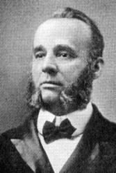
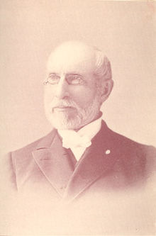

|
|
【耶穌喜愛世上小孩】 |
|
Jesus loves the little children,
|
耶穌喜愛世上小孩，世上所有的子孩。
|
|
https://hymnary.org/hymn/BH2008/page/894 https://file.zanmeishige.com/store/2016/04/15/5710a30f8362dcfe4e8b4976.png 第17首 -耶稣喜爱小孩
|
|
|
|
|


https://youtu.be/CImq3BOJxiE -
Jesus Loves the Little Children Lyrics || Sunday School song https://youtu.be/LUg-UvjEmSY
| Text: | Jesus Loves the Little Children |
| Author: | C. H. Woolston |
| Tune: | CHILDREN |
| Composer: | George F. Root |
| Short Name: | C. H. Woolston |
| Full Name: | Woolston, C. H. (Clarence Herbert), 1856-1927 |
| Birth Year: | 1856 |
| Death Year: | 1927 |

A Baptist minister, Woolston lived with his wife Agnes in East Brunswick, New Jersey, in 1880; and in Philadelphia, Pennsylvania, in 1900, 1910 & 1920.
Tune Information
| Title: | CHILDREN (Chorus) |
| Composer: | George F. Root |
| Meter: | 7.7.11.7.7.11 with refrain |
| Incipit: | 54351 21171 16554 |
| Key: | A♭ Major/G Major |
| Copyright: | Public Domain |
| Short Name: | George F. Root |
| Full Name: | Root, George F. (George Frederick), 1820-1895 |
| Birth Year: | 1820 |
| Death Year: | 1895 |
Root, George F., MUS. DOC, born in Sheffield, Berkshire County, Mass., Aug. 30, 1820.

He is much more widely known as a composer of popular music than as a hymn writer. Four of his hymns are in I. D. Sankey's Sacred Songs & Solos, 1878. Nos. 16, 100, 293, and 297. A sympathetic biographical sketch, with portrait, is in The Tonic Sol-Fa Reporter, Sep. 1886. He died Aug. 6, 1895.
--John Julian, Dictionary of Hymnology, Appendix, Part II (1907)
=====================
George Frederick Root was born in Sheffield, Mass., August 30, 1820. His father moved to North Reading, near Boston, when the boy was six years old, and there his youth was spent.
He was always fond of music— not singing at all as a boy, but played upon every kind of instrument that came in his way. At thirteen it was his pride that he could "play a tune" on as many instruments as he was years old. His dream of life was to be a musician, although such an ambition was looked down upon by all his relatives and friends, excepting a fond mother. In the fall of 1838 he went to Boston and made an engagement to work for Mr. A. N. Johnson and take lessons on the piano.
His father and one of the brothers were at the time in South America, and the mother, with six younger children, was at home on the farm. When he secured the engagement with Mr. Johnson to receive three dollars a week and board and lessons, the neighbors became interested and encouraged him to go ahead, they promising to help look after the farm and see that the family got along. The young man's happiness over these events can better be imagined than described.
On the second day of October, 1838, he entered upon his duties in his new heaven on earth located at Harmony Hall, Mr. Johnson's music-room, in Boston. His duties were to see to the fires, care for the room, answer callers, give information about Mr. Johnson when he was out, and practice his lessons when not otherwise engaged. He worked industriously and made steady progress. It was but a few weeks till Mr. Johnson had him playing for the prayer-meeting, and but a few more till he began turning over pupils to him. In about seven weeks' time Mr. Johnson encouraged him by a considerable increase of salary. A most important event to him was meeting Dr. Lowell Mason and being accepted as a bass singer in the celebrated Bowdoin Street choir. Also, on Mr. Johnson's recommendation, he began taking private voice lessons of Mr. Geo. Jas. Webb, the then celebrated voice teacher of Boston. He continued at least a year with Mr. Webb.
His first real singing class was taught the following fall, 1839, at the North End. It lasted nearly through the winter, and on the closing night his class made him a present of a silver goblet, suitably engraved, which he kept among his treasures.
Before the first year was up Mr. Johnson proposed a five year partnership, by which Mr. Root was to receive one-third of their earnings, and the former was to have the privilege of visiting Germany part of the time if he chose. They then changed their quarters to three rooms in the basement of Park Street Church. The annual rental was six hundred dollars. They were kept quite busy.
At this time Dr. Mason's music teaching in the public schools was a growing success, and Messrs. Johnson and Root were employed to assist him. Drs. Mason and Webb had introduced what is now called Musical Conventions a year or two previous to this. They called them "The Teachers' Class." Teachers and singers were called to Boston from surrounding territory to study and practice pretty much as they do now at normals.
In 1841 Mr. Root became one of the teachers in this class. He taught vocal training and continued this work for years afterward in Dr. Mason's teachers' classes, and later incorporated the same method in his own normals. During this year Mr. Johnson went to Germany, and left the two large church choirs (Winter Street and Park Street) in charge of Mr. Root. One of the organs was played by a pupil — Mr. S. A. Bancroft.
Everything went smoothly during Mr. Johnson's absence as it did also after his return. During the last year of the five-year partnership, Mr. Root was called to take the organ at Bowdoin Street, Mr. Mason changing to Winter Street. An amicable settlement was made between Messrs. Johnson and Root, and the partnership dissolved.
In 1811, Mr. Jacob Abbott (father of Lyman Abbott)and his three brothers had established a young ladies' school in New York City. They wanted a music teacher, and offered the position to Mr. Root. They also secured him the organ and choir of the Mercer Street Church, with prospects for other good work. It required pretty strong persuasive arguments to tempt Mr. Root to leave Boston, he was doing well there, and as the sequel shows, there was an attraction in Boston that held him in too tight a grasp to be relinquished by the mere offer of greater power and place. He made up his mind, however, only after getting the consent of the powders of Boston to take with him this [to him] the greatest attraction of the city — Miss Mary Olive Woodman — an accomplished lady, a sweet singer, and a member of a prominent family of musicians. He went to New York first to prepare a home, and in August, 1845, returned for his bride, who took her place in his New York choir as leading soprano, and through his long and eventful career she was ever at his side, a true helpmeet.
He was soon employed at Rutger's Female Institute, Miss Haines' School for Young Ladies, Union Theological Seminary and the New York State Institution for the Blind. Within six weeks after he arrived in New York his time was fully occupied. He continued with Mr. Abbott's young ladies' school ten years.
While teaching in New York he continued his summer work with Messrs. Mason and Webb in Teachers' Classes. Up to the year 1849 he had written but little music; only a few hymn tunes while in Boston. He needed more music for the young ladies of his schools, so he made his first book, The Young Ladies' Choir, of which he had enough copies made for his own use, as he had no thought of offering it to the public. Then in connection with Mr. J. E. Sweetser, they compiled the Root and Sweetser's Collection.
Mr. Root did work enough for two men, hence broke down in health. Mr. Abbott suggested that he take a trip to Paris. After weighing the matter carefully, in December, 1853, he sailed, and in due time arrived at Paris, where he began studying French, voice culture and piano under celebrated teachers. After spending nearly a year abroad, he returned home in improved health and ready for active work. He began to feel the need of new music for his classes, and after some thought decided upon a musical play ; the subject and title, The Flower Queen.
At the Institution for the Blind was a young lady, a former pupil, but now a teacher who had shown some poetical talent. He asked her to help him with the words. He would suggest in prose what the flowers might say and she would put it into rhyme. She did it so well that it seldom needed any alteration. This lady was the now famous Fanny Crosby. The cantata became very popular. About this time Mr. Root wrote a half dozen simple songs for the people. They all sold pretty well, but Hazel Dell and Rosalie, the Prairie Flower, became the most popular, and had a large sale.
It was in the summer of 1853 that the first real normal was held. Mr. Root originated it, and held it in New York. The principal teachers were Messrs. Mason, Root, Hastings, and Bradbury. This school became famous. Sessions were also held at North Reading, Mass., a village near Mr. Root's "Willow Farm Home," with Dr. Mason, Mr. Webb, Mr. Bradbury and himself as principal teachers.
About this time Mr. Root decided to give up his work in New York, and devote himself entirely to conventions, normal work and authorship. He was eminently successful. Among the most eminent teachers and composers of our country have been students in Dr. Geo. F. Root's Normal Musical Institute.
In 1860 Dr. Root settled in Chicago and entered the music publishing business with his brother E. T. Root, and C. M. Cady, as "Root & Cady," Mr. Root's reputation being the most important capital of the firm. His books and popular songs soon made the new firm prosperous. Then came the war with its horror. Dr. Root wielded his musical sword in the way of writing war songs, which made him famous. The Battle Cry of Freedom, Just Before the Battle, Mother, and others, made thousands of dollars for the music house.
In the great Chicago fire of 1871 the interests of the firm of Root & Cady became engulfed in the general ruin. Their loss was upward of a quarter of a million dollars. They then sold their book catalogue, plates and copyrights to John Church & Co., of Cincinnati, and the sheet music plates and copyrights to S. Brainard's Sons, Cleveland. These sales realized about §130,000. The final result was that Dr. Root, his talented son F. W., and others became connected with John Church & Co. Under this new business relationship Mr. Root went right on with his normal and convention work; also issued a great many new books and cantatas. In 1872 the Chicago University very worthily conferred upon him the degree Doctor of Music.
In 1886 he made a trip to Scotland and England, and arranged with publishers to issue some of his cantatas. He was royally received.
Dr. Root was the author of about seventy-five books, nearly two hundred songs in sheet form, and many popular gospel songs. Dr. Root occupies a prominent place in the musical history of this country. It was Dr. Mason who lifted music from almost nothing and gave it an impetus, but he left no better follower than Dr. Root to carry on his work. He was a man of spotless integrity and high Christian character, and to know him was to love him.
At the time of Dr. Root's death he was at Bailey Island, Maine, a summer resort, where he and other relatives had cottages. On August 6, 1895, he was seized with neuralgia of the heart — and died within one hour. He was buried at North Reading, Mass., his old home.
--Hall, J. H. (c1914). Biographies of Gospel Song and Hymn Writers. New York: Fleming H. Revell Company.
George Frederick Root 1820–1895 Wikipedia
|
George Frederick Root
|
|
|---|---|
|
 |
|
| Born |
August 30, 1820
Sheffield, Massachusetts, U.S.
|
| Died |
August 6, 1895 (aged 74)
Bailey Island, Maine, U.S.
|
| Nationality | American |
| Occupation | Songwriter |
| Known for | Wartime songs |
George Frederick Root (August 30, 1820 – August 6, 1895) was an American songwriter, who found particular fame during the American Civil War, with songs such as "Tramp! Tramp! Tramp!" and "The Battle Cry of Freedom". He is regarded as the first American to compose a secular cantata.[1]
Early life and education[edit]
Root was born at Sheffield, Massachusetts, and was named after the German composer George Frideric Handel. Root left his farming community for Boston at 18, flute in hand, intending to join an orchestra. He worked for a while as a church organist in Boston, and from 1845 taught music at the New York Institute for the Blind, where he met Fanny Crosby, with whom he would compose fifty to sixty popular secular songs.[2]
In 1850, he made a study tour of Europe, staying in Vienna, Paris, and London.[3] He returned to teach music in Boston, Massachusetts as an associate of Lowell Mason, and later Bangor, Maine, where he was director of the Penobscot Musical Association and presided over their convention at Norumbega Hall in 1856.[4]
From 1853 to 1855, Root helped Lowell Mason and William Bradbury establish the New York Normal Musical Institute, which served as a school for aspiring music educators. From 1855 on, Root would spend most of his summers traveling and teaching at music education conventions throughout New England.[1] He applied a version of Pestalozzi's teaching and was instrumental in developing mid- and late-19th century American musical education. He was a follower of the teachings of Emanuel Swedenborg.[5]
Career[edit]
On his return from Europe, Root began composing and publishing sentimental popular songs, a number of which achieved fame as sheet-music, including those with Fanny Crosby: The Hazel Dell, Rosalie the Prairie Flower, There's Music in the Air and others, which were, according to Root's New York Times obituary, known throughout the country in the antebellum period.[3] Root chose to employ the pseudonym Wurzel (German for Root) to capitalize on the popularity of German composers during the 1850s, and to keep his identity as a serious composer against his composition of minstrel and popular songs.[6]
Besides his popular songs, he also composed gospel songs in the Ira Sankey vein, and collected and edited volumes of choral music for singing schools, Sunday schools, church choirs and musical institutes. Root assisted William Bradbury in compiling The Shawm in 1853, a collection of hymn tunes and choral anthems, featuring the cantata Daniel: or the Captivity and Restoration.[7] The cantata was a collaboration between Root and Bradbury musically, with text by Fanny Crosby and C.M. Cady. In 1860 he compiled The Diapason: Collection of Church Music.
He also composed various sacred and secular cantatas including the popular The Haymakers (1857). Root's cantatas were popular on both sides of the Atlantic throughout the 19th century. His first cantata, The Flower Queen: or The Coronation of the Rose, was composed in 1851 with libretto by Fanny Crosby, and gained immediate success in singing schools across the United States.The Flower Queen has been regarded as the first secular cantata written by an American.[1]

{kind=link}
Building on his talent for song-writing, Root moved to Chicago, Illinois in 1859 to work for his brother's music publishing house of Root & Cady. He became particularly successful during the American Civil War, as the composer of martial songs such as "Tramp! Tramp! Tramp!" (The Prisoner's Hope), "The Vacant Chair" (with lyrics by Henry S. Washburn), "Just before the Battle, Mother", and "The Battle Cry of Freedom".[8] He wrote the first song concerning the war, The First Gun is Fired, only two days after the conflict began with the bombardment of Fort Sumter. He ultimately had at least 35 war-time "hits", in tone from the bellicose to the ethereal.[4] His songs were played and sung at both the home front and the real front. Tramp, Tramp, Tramp became popular on troop marches, and "Battle Cry of Freedom" became well-known even in England.[4]
After the war, he was elected as a 3rd Class (honorary) Companion of the Military Order of the Loyal Legion of the United States. Root's songs, particularly "The Battle Cry of Freedom", were popular among Union soldiers during the war. According to Henry Stone, a Union war veteran recalling in the late 1880s:
Later life and death[edit]
Root was awarded the degree of Musical Doctor by the first University of Chicago in 1872.[10] He died at his summer home in Bailey Island, Maine, at the age of 74. He was buried at the Harmonyvale Cemetery in North Reading, Massachusetts.[6]
Legacy[edit]
Root was inducted into the Songwriters Hall of Fame in 1970.
Tramp, Tramp, Tramp, the Boys are Marching provided the tune for the later Jesus Loves the Little Children, with lyrics by C. Herbert Woolston, and also for the later God Save Ireland. The Vacant Chair provided a tune reused in Life's Railway to Heaven, and sometimes reused in To Jesus' Heart All Burning.
See also[edit]
Bibliography[edit]
- George F. Root: The story of a musical life; an autobiography
- Polly Carder: George F. Root, Civil War songwriter : a biography
- Polly Hinson Carder: George Frederick Root, pioneer music educator his contributions to mass instruction in music
- Cheryl Ann Jackson: George Frederick Root and his Civil War songs
https://en.wikipedia.org/wiki/George_Frederick_Root
History of Hymns: 'Jesus Loves the Little Children'
BY C. MICHAEL HAWN
"Jesus Loves the Little Children"
by C. Herbert Woolston
Songs of Zion, No. 26
Refrain:
Jesus loves the little children,
All the children of the world;
Red and yellow, black and white,
All are precious in his sight,
Jesus loves the little children of the world.
A pastor, gospel songwriter, and sleight-of-hand magician, Clarence Herbert Woolston (1856–1927) claimed that he had “addressed many more than 1,000,000 children” (The Philadelphia Inquirer, 1927, p. 4). This statement provides a clue to his hymnic legacy.
BIOGRAPHY
The son of Isaiah S. and Sarah B. Woolston, Herbert attended public schools in Camden, New Jersey, and the South Jersey Institute at Bridgeton. He entered the ministry under the influence of evangelist H.G. DeWitt in 1873, attending Crozier Theological Seminary (Upland, Pennsylvania) from 1877–79, an institution devoted to training American Baptist ministers. Following his ordination in 1880, Woolston served New Jersey Baptist congregations at South River (1880–85) and Lambertville (1885–87). He concluded his ministry with a forty-year pastorate at East Baptist Church, Philadelphia (1887–1927) (Eskew, 1992, p. 493). Under his leadership, “the congregation grew from 176 members to more than 1,000” (The Philadelphia Inquirer, 1927, p. 4). At the celebration of fifty years of ministry (March 20, 1923), his congregation gave him $2,000 for a European trip with his friend, Homer A. Rodeheaver. Rodeheaver was also the publisher of his most famous hymn.
Woolston married Agnes Claire Worrall (1859–1941). According to his obituary, he was “stricken with motor aphasia a month after his congregation helped him celebrate the fortieth anniversary of his pastorate at the church on the last Washington’s Birthday [February 11]." He died not long after his seventy-first birthday (The Philadelphia Inquirer, 1927, p. 4).
C. Herbert Woolston authored Seeing Truth: A Book of Object Lessons with Magical and Mechanical Effects (Chicago and Philadelphia, 1910). The full citation provides information about the author: “by Rev. C. Herbert Woolston, D.D., The Object Teacher, Pastor of the East Baptist Church, Philadelphia, Pa., Founder of the Penny Concert Movement in America and Gospel Illustrator for the Common People.” The author dedicates the book “To the One Hundred Thousand Little Children who have both heard and seen these Object Lessons” (italics in original). Other books include Penny Object Lessons (with Homer A. Rodeheaver and Frank B. Lane; Chicago and Philadelphia, 1916), and The Bible Object Book: A Book of Object Lessons Which Are Different, Written in Plain English and in Common Words (Philadelphia, 1926).
Woolston’s obituary notes that he was known as “a pastor-magician because of his use of sleight-of-hand to demonstrate features of his sermons with which he wished particularly to impress his congregation” (The Philadelphia Inquirer, 1927, p. 4).
THE HYMN TEXT
Woolston’s extensive ministry to children as a magician and author undoubtedly led to the composition of this text. Most children connected to Christian churches in the United States between 1930 and 2000 have likely learned the refrain of the original hymn either in Sunday (Church) School, a children’s choir, or a domestic setting:
Woolston’s three-stanza hymn was initially published in The Gospel Message, No. 3 (Philadelphia, 1913). Only the refrain of which remains in common use. Stanza 1 enlarges the words of Jesus in Matthew 19:14, “Let the children come to me”:
Jesus calls the children dear,
‘Come to me and never fear,
For I love the little children of the world.
I will take you by the hand,
Lead you to the better land
For I love the little children of the world.
Stanza two recalls the image of Christ as the Good Shepherd who protects his sheep found in John 10:11, based on Psalm 23:
Jesus is the Shepherd true,
And he'll always stand by you,
For he loves the little children of the world.
He's a Saviour great and strong,
And he'll shield you from the wrong,
For he loves the little children of the world.
The original printing of stanza three included a misprint at the end of the first line (see https://hymnary.org/hymn/GM31913/page/95). The image of a soldier may be a reference to the original Civil War text to this tune by northeastern gospel song composer and publisher George F. Root (1820–1895):
I am coming Lord to the[e],
And thy soldier I will be,
For he loves the little children of the world.
And his cross I'll always bear,
And for him I'll do and dare,
For he loves the little children of the world.
Within a few years of the hymn’s publication, editors retained only the refrain in collections.
The refrain has been subject to numerous formal and informal textual modifications. Sing Joyfully (Carol Stream, Illinois, 1989) added a second stanza to the refrain that is virtually identical to the original except for the substitution of the words “died for all the children” for “loves the little children.” The Baptist Hymnal (Nashville, 1991) substitutes the following phrase for the traditional list of skin colors and introduces the theological concept of “grace”: “Ev’ry color, ev’ry race, all are covered by His grace” (© 1991 Broadman Press). Though published primarily in evangelical and African American hymnals in the United States, the song remains a part of children's repertoire even in denominations that do not include it in their collections. Numerous websites offer unofficial modifications and additional stanzas intended to broaden the song's ethnic inclusion, e.g., “Red, brown, yellow, black and white,” or enhance its theological message. Some change the description from skin pigmentation to body type—“Fat and skinny, short and tall, /Jesus loves them one and all”—or substitute a humorous parody: “Pink and purple, green and blue, / Jesus loves the Martians, too.”
THE MUSIC
The tune, sometimes called CHILDREN, was the popular Union Civil War song, “Tramp! Tramp! Tramp!” (Chicago, 1864) by gospel song composer George F. Root. Root’s original refrain follows:
Tramp! Tramp! Tramp! The boys are marching,
Cheer up, comrades they will come,
And beneath the starry flag, we shall breathe the air again,
Of the free land in our own beloved home.
Though Woolston's reason for this choice of tune is not apparent, the Old Main Building of Crozier Theological Seminary, where he attended from 1877–1879, served as a hospital for Union Soldiers during the Civil War. Woolston's presence at Crozier only a little more than a decade after the conclusion of the War would, undoubtedly, would have made him aware of the Seminary's role during that conflict. Root's text and tune were likely a well-known part of his formational years. Another possibility was that this was a tune suggested by his friend Homer A. Rodeheaver (1880–1955), owner of the Rodeheaver Hall-Mack Co. Rodeheaver, purchased the Hall-Mack Company in 1910, three years before The Gospel Message, No. 3 was published, and was known for his promotional skills.
CONCLUSION
The refrain of Woolston’s original children’s hymn probably holds a place in the United States second only to “Jesus loves me! This I know” (1859) by Anna Bartlett Warner (1827–1915) with music by William Batchelder Bradbury (1816–1868). With its worldwide perspective, Woolston's text is arguably the American counterpoint to Warner's verse written in the first-person singular. Both tunes were composed by prominent nineteenth-century American gospel song composers. Both have been translated numerous times in the languages of the inhabitable continents.
CODA
The worldwide perspective of this refrain—“little children of the world”—may be a byproduct of the fervor of the “foreign” missions movement during the turn of the twentieth century by Baptists and other ecclesial bodies. With appreciation for the author’s intent to be inclusive at that time, for many today, viewing the world’s diversity through skin pigmentation raises questions. The church has often focused on the salvation of those overseas while suffering myopia when recognizing the needs and injustice experienced by our neighbors closest to us. At the same time this song about God's love for the world’s children was growing in popularity, black children in the Jim Crow South suffered poverty and discrimination. “Red” Native American children were removed from their families and placed in boarding schools. “Yellow” Asian American children and their families experienced discrimination and, later, were interred and relocated into camps in the western United States. Unmentioned “brown” families from Mexico were often farm laborers in the southwest, though an essential part of the food distribution for a growing country, worked for minimal pay and under inhuman conditions. We always run the danger of reaching out to those far away at the expense of those closest to us. The songs that we teach our children shape their perspective of God, our response to God, and our love of neighbor. Even the simplest of songs may carry a profound message.
SOURCES
Harry Eskew, “Jesus loves the little children,” Handbook to The Baptist Hymnal, ed. Jere V. Adams (Nashville: Convention Press, 1992), pp. 170–171.
______, “Woolston, Clarence Herbert,” Handbook to The Baptist Hymnal, ed. Jere V. Adams (Nashville: Convention Press, 1992), p. 493.
C. Herbert Woolston, Seeing Truth: A Book of Object Lessons with Magical and Mechanical Effects (Philadelphia and Chicago: Praise Publishing Co., 1910): https://www.google.com/books/e... (accessed July 24, 2021).
“Rev. Dr. Woolston Dies,” The Philadelphia Inquirer (21 May 1927), https://www.newspapers.com/clip/8537251/rev-dr-c-herbert-woolston/ (accessed July 24, 2021).
Jesus Loves the Little Children Wordwise Hymns
Words: Clare Herbert Woolston (b. _____, 1856; d. _____, 1927)
Music: George Frederick Root (b. Aug. 30, 1820; d. Aug. 6, 1895)
Links:
Wordwise Hymns (George Root)
The Cyber Hymnal
Hymnary.org
Note: Woolston and his wife Agnes lived in New Jersey and Pennsylvania. He
served as a Baptist pastor, and wrote a number of books of object lessons for
use in children’s ministry. Little else seems to be known about him.
Interestingly, George Root wrote the tune here to the words, “Tramp, tramp,
tramp, the boys are marching,” during the Civil War. After the war, wanting to
use the tune for a more enduring purpose, he asked Woolston to create some words
to fit it, and this is the result.
If you’ve ever watched a detective story on television, you have some idea of
what they look for in order to find and convict the guilty. There’s the physical
evidence of the crime scene that often points the way. Then, there are things
like means and opportunity to commit the crime. And finally, motivation. Why did
he or she do it?
The “why” question is often asked in the Bible too–over four hundred times.
Sometimes the query is directed to God. For example, the psalmist asks, “Why do
You hide Your face from me?” (Ps. 88:14). He’s wondering why he doesn’t sense
the presence of the Lord, as he did in former times.
Sometimes there is an answer available for our own spiritual “why?” questions.
As we study His Word, and look at puzzling circumstances from that perspective,
we gain a new understanding. However, since the Lord is infinitely above us in
so many ways (Isa. 55:8-9), there will be times when we cannot see why He does
things the way He does.
That is one reason the Son of God took on our humanity. He reveals God to us in
ways we can grasp more fully. It’s interesting that one of the names used for
Christ is “the Word” (Jn. 1:1). We use words to translate one language into
another. And the Lord Jesus translates God into our humanity.
“The Word became flesh and dwelt among us, and we beheld His glory, the glory as
of the only begotten of the Father, full of grace and truth” (Jn. 1:14).
One of the things that’s revealed through Christ’s days on earth is His loving
concern for little children. He welcomed them and held them in His arms, and
blessed them (Mk. 10:13-16). He used a child’s humility and simple trust as an
example for us all (Matt. 18:2-5), and He warned of dire consequences for any
who would dare to lead children astray (Matt. 18:6).
Christ love for children is highlighted in an old Sunday School chorus, written
by Clare Herbert Woolston, a pastor in New Jersey. But many likely are not aware
that there are also three stanzas to the song.
CH-1) Jesus calls the children dear,
“Come to Me and never fear,
For I love the little children of the world;
I will take you by the hand,
Lead you to the better land,
For I love the little children of the world.”
Then comes the better known refrain, that many of us sang years ago.
Jesus loves the little children,
All the children of the world.
Red and yellow, black and white,
All are precious in His sight,
Jesus loves the little children of the world.
The question is: Why did the Lord Jesus (and why does He) love and delight in
children? We cannot know entirely, but here are a few possibilities to ponder.
1) Because He created them (Jn. 1:3). They are an important part of His
overarching and eternal purpose for creation (Rom. 11:36).
2) Because He sees their wonderful potential, not just in a general sense, but
the potential of each individual child.
3) Because, as noted above, He delights in their simple trust and their love for
Him, which He views as a model for young people and adults.
4) Because He rejoices in their spontaneous and unaffected joy. Adults so often
hold back in expressing their feelings. (“What will people think of me?”) But
children openly celebrate blessings life brings their way.
5) Because, He wanted to counteract negative views of children. The disciples
tried to keep parents from bringing their children to Jesus (Matt. 19:13), and
the Pharisees were indignant when children joined in praising Him (Matt.
21:15-16), suggesting that many adults reluctantly tolerated them, and preferred
them to keep silent or out of the way.
6) Because, as the warning of Matthew 18:6 reminds us, children are vulnerable
in an adult world. The attention and love of Christ for them shows His concern
and his desire that they be protected.
These could be some of the some reasons why the Lord Jesus loved children while
He was on earth, and why He loves them now.
Questions:
1) What kind of ministries to children does your church have?
2) Are there others for children that you would like to see used by your
congregation?
Links:
Wordwise Hymns (George Root)
The Cyber Hymnal
Hymnary.org
https://wordwisehymns.com/2017/06/12/jesus-loves-the-little-children/